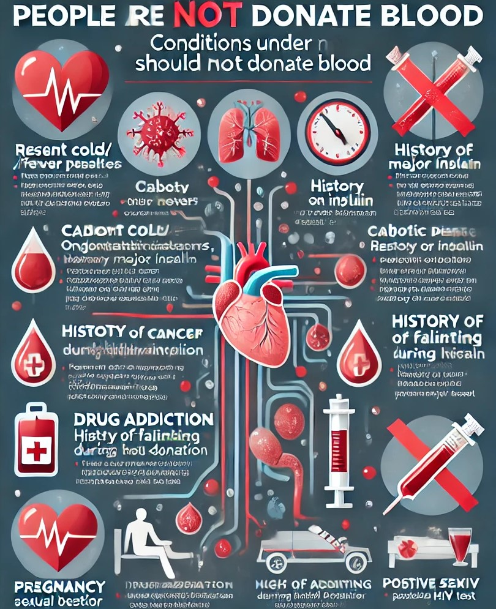

Who can/can't Donate
Can Donate :-
- you are between age group of 18-60 years.
- your weight is 45 kgs or more.
- your haemoglobin is 12.5 gm% minimum.
- your last blood donation was 3 months earlier.
- you are healthy and have not suffered from malaria, typhoid or other transmissible disease in the recent past.
Can't Donate:-
- cold / fever in the past 1 week.
- under treatment with antibiotics or any other medication.
- cardiac problems, hypertension, epilepsy, diabetes (on insulin therapy), history of cancer,chronic kidney or liver disease, bleeding tendencies, venereal disease etc.
- major surgery in the last 6 months.
- vaccination in the last 24 hours.
- had a miscarriage in the last 6 months or have been pregnant / lactating in the last one year.
- had fainting attacks during last donation.
- have regularly received treatment with blood products.
- shared a needle to inject drugs/ have history of drug addiction.
- been tested positive for antibodies to HIV.
